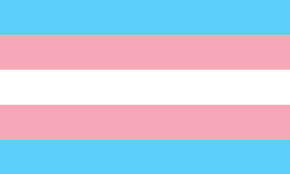

Bandiera Gay
Le persone trans (o transgender) sono individui la cui identità di genere non corrisponde al sesso assegnato loro alla nascita. Possono scegliere di intraprendere un percorso di transizione, che può includere cambiamenti sociali, medici e legali, per allineare il loro corpo e la loro vita alla loro identità di genere. La transizione può comportare terapie ormonali, interventi chirurgici, cambi di nome e abbigliamento. Essere trans riguarda l'autenticità e il riconoscimento della propria identità di genere, al di là delle aspettative sociali legate al sesso biologico.

HOME